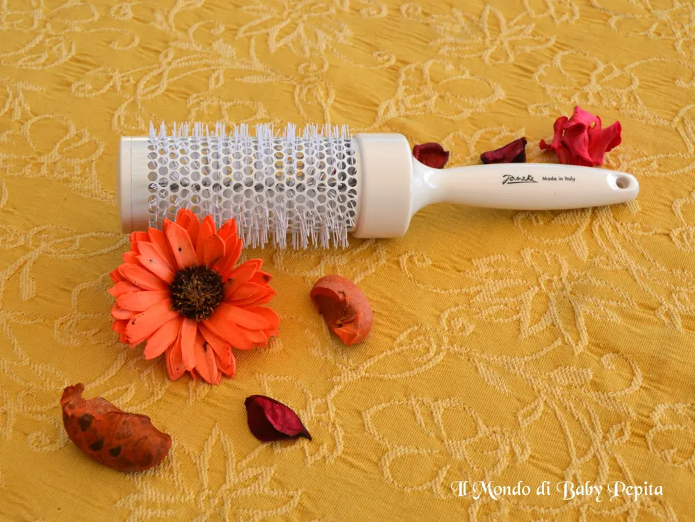
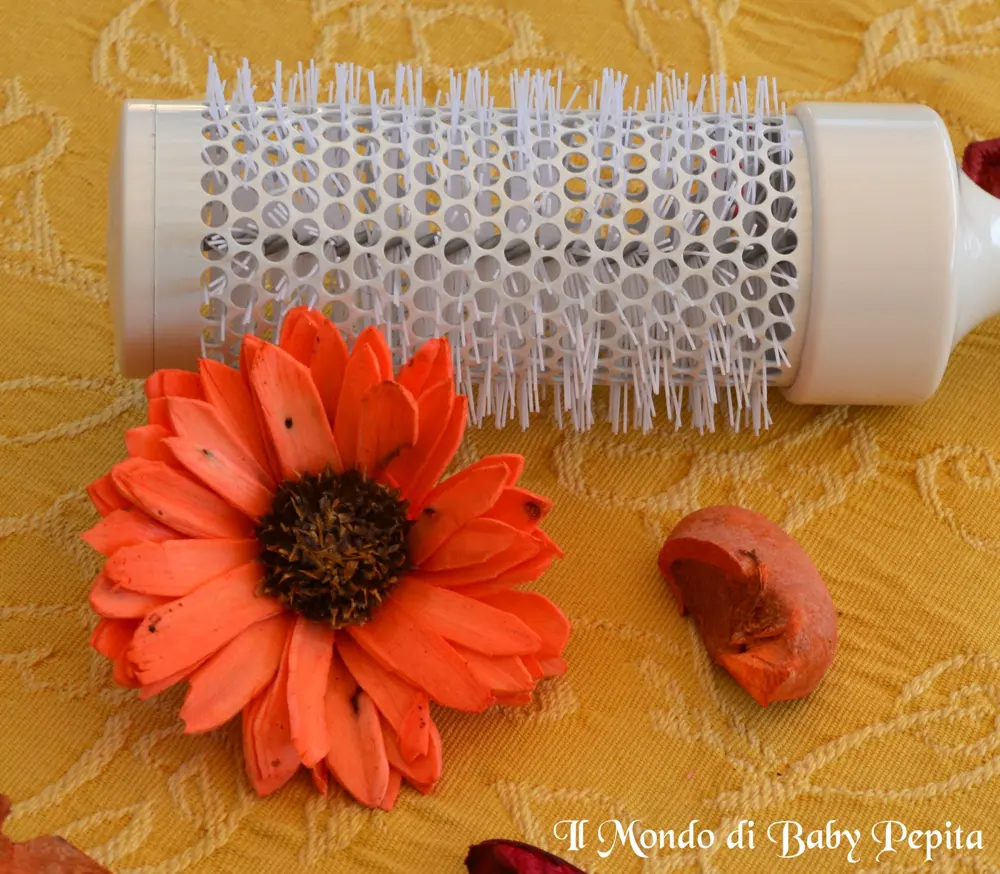
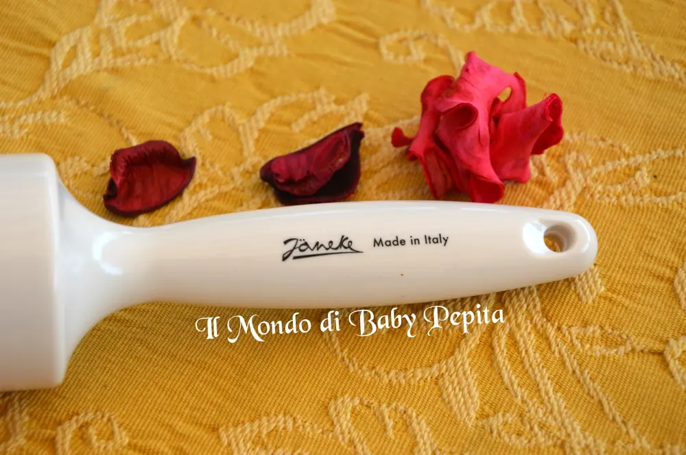

JANEKE - Spazzola termica da baciare

Sono stata una settimana assente e chi segue la mia pagina avrà di sicuro letto i motivi. .Ma non posso assentarmi ai miei impegni, ovvero quello di presentarvi ancora una volta quest'azienda che ci sta diventando sempre più familiare. . La Janeke 1830 marchio 100% Made in Italy Abbiamo imparato a capire,finora grazie appunto alla Janeke, che ogni spazzola ha una funzione diversa e che non è vero che una vale l'altra. .Ognuno, come la pelle ha diverse esigenze, anche i capelli hanno esigenze specifiche.Oggi vi mostro una spazzola adatta per chi è abituata a farsi la messa in piega, o per molti hair-styling ovvero la SPAZZOLA TERMICA TONDA. .
La Janeke 1830 marchio 100% Made in Italy Abbiamo imparato a capire,finora grazie appunto alla Janeke, che ogni spazzola ha una funzione diversa e che non è vero che una vale l'altra. .Ognuno, come la pelle ha diverse esigenze, anche i capelli hanno esigenze specifiche.Oggi vi mostro una spazzola adatta per chi è abituata a farsi la messa in piega, o per molti hair-styling ovvero la SPAZZOLA TERMICA TONDA. .

Creata interamente in alluminio ed antiurto che trattiene il calore dell'asciugacapelli perfettamente in modo da donare una messa in piega in poco tempo e senza fatica. La cosa che più vi sorprenderà è che è stata studiata apposta per evitare l'effetto del crespo facendo risultare i capelli morbidi e setosi.

Un altro punto a suo favore è che non è una spazzola pesante ma fatta di un materiale per farla risultare più leggera possibile in modo da non stancare i polsi.

Insomma una spazzola da baciare per la praticità e la piega che desideriamo che ci regala :D
Per info e dettagli di tutte le spazzole e accessori Janeke 1830 vi lascio i link qui sotto:Sito: http://janeke.it/Facebook: https://www.facebook.com/janeke1830/?fref=tsIn quanto a me potete seguirmi qui:FACEBOOKINSTAGRAMTWITTERYOUTUBESNAPCHAT